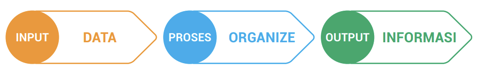

Naratif
Naratif dalam algoritma merupakan cara menuliskan instruksi yang harus dilaksanakan secara berurutan dalam bentuk cerita atau uraian kalimat dengan menggunakan bahasa yang jelas seperti bahasa dalam kehidupan sehari-hari.
Contoh: menghitung luas persegi panjang menggunakan naratif
Langkah ke-1: mulai
Langkah ke-2: baca nilai panjang
Langkah ke-3: baca nilai lebar
Langkah ke-4: hitung luas (Panjang x Lebar)
Langkah ke-5: cetak hasil luas
Langkah ke-6: selesai
Pseudocode
Pseudocode adalah metode penulisan algoritma yang hampir sama seperti bahasa pemrograman, namun pseudocode lebih sederhana dan ditulis menggunakan bahasa yang mudah dipahami manusia. Dalam struktur penulisannya, pseudocode dibagi menjadi tiga bagian yaitu sebagai berikut.
- Judul
- Deklarasi
- Isi
Bagian judul diawali dengan nama “PROGRAM” kemudian diikuti dengan nama algoritma.
Deklarasi digunakan untuk mendeklarasikan variabel apa saja yang akan digunakan di dalam algoritma dan sejenisnya.
Bagian utama dari jalannya algoritma.
Contoh: Pseudocode untuk menghitung luas persegi panjang
PROGRAM Hitung Luas Persegi Panjang
DEKLARASI
int p, l
float luas
ALGORITMA
Baca p dan l
Hitung luas = p * l
Tampilkan luas
PSEUDOCODE adalah metode penulisan algoritma yang menjelaskan urutan sebelum program ditulis ke dalam bahasa pemrograman yang diinginkan.
Flowchart
Flowchart adalah suatu bagan dengan simbol-simbol tertentu yang menggambarkan urutan proses secara mendetail dan hubungan antara suatu proses (instruksi) dengan proses lainnya dalam suatu program.
Secara umum setiap struktur flowchart selalu terdiri atas tiga bagian, yaitu input (masukan), proses, dan output (keluaran).
